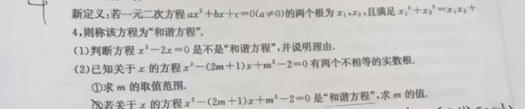

错题 ① “和谐方程”
一元二次方程 · 新定义
新定义理解与翻译
根的判别式
韦达定理 · 恒等变形
易错点
- 不会把 x₁²+x₂² = x₁x₂+4 恒等变形为 (x₁+x₂)² − 3x₁x₂ = 4；
- 求出参数 m 后忘记用判别式 Δ > 0 检验，保留多余解；
- 展开 (2m+1)² 时漏掉中间项 4m，符号出错。
突破对策
① 新定义题先“翻译”：把新条件改写成熟悉的代数式；② 含参方程三步走：求 Δ → 列不等式定范围 → 回代检验；③ 专项练韦达恒等变形（x₁²+x₂²、1/x₁+1/x₂）。
查看原题
新定义：若一元二次方程 ax²+bx+c=0（a≠0）的两个根为 x₁、x₂，且满足 x₁²+x₂² = x₁x₂+4，则称该方程为“和谐方程”。
(1) 判断方程 x²−2x=0 是不是“和谐方程”，并说明理由。
(2) 已知关于 x 的方程 x²−(2m+1)x+m²−2=0 有两个不相等的实数根，① 求 m 的取值范围；② 若该方程为“和谐方程”，求 m 的值。
(1) 判断方程 x²−2x=0 是不是“和谐方程”，并说明理由。
(2) 已知关于 x 的方程 x²−(2m+1)x+m²−2=0 有两个不相等的实数根，① 求 m 的取值范围；② 若该方程为“和谐方程”，求 m 的值。
